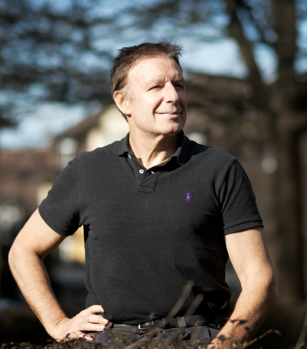

Prof. Didier Sornette (宋笛牒院士/教授)
Role: Principal Investigator, Chair Professor
Research: Cooperation, organization, patterns, prediction
Email: dsornette@ethz.ch
Bio: Prof. Didier Sornette is Chair Professor and co-Dean of the Institute of Risk Analysis, Prediction and Management (Risks- X) at the Southern University of Science and Technology (SUSTech) at Shenzhen, China. He is a member of the Swiss Academy of Engineering Sciences and of the Academia Europaea. He is professor emeritus of ETH Zurich since 31st July 2022, where he was a founding member of the Risk Center at ETH Zurich. Since 1st August 2022, he has taken an active role in the private sector, applying his energy to develop socially important business products associated to earthquake forecasts and financial crises, as well as in medical applications. He uses rigorous data-driven mathematical statistical analyses combined with nonlinear multi-variable dynamical models with positive and negative feed-backs to study the predictability and control of crises and extreme events in complex systems, with applications to all domains of science and practice.